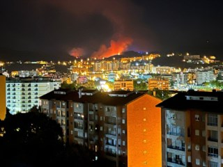
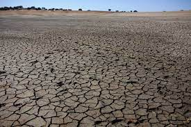

Cheias no Porto
O Porto, cidade às margens do rio Douro, encara desafios frequentes com as cheias, especialmente nos
meses de inverno. Essas inundações impactam não só a mobilidade e a infraestrutura, mas também provocam
reflexões sobre a gestão urbana e as mudanças climáticas.
Vamos explorar como as cheias afetam o coração cultural de Portugal. O Porto, com suas colinas
pitorescas e proximidade com o rio, é deslumbrante, porém vulnerável às intempéries. Projetos de
infraestrutura e conscientização buscam fortalecer a cidade contra esse desafio constante.
Este é um olhar mais aprofundado sobre como o Porto, com sua rica herança cultural, enfrenta as cheias.
Destacaremos as medidas adotadas para fortalecer a resiliência da cidade, ressaltando a importância da
inovação e da colaboração global em prol de um futuro mais sustentável.
Read the rest ...

Incêndios assolam a região de Coimbra, lançando um alerta para a gravidade das condições climáticas na
área. Nos últimos meses, a cidade e seus arredores têm enfrentado desafios significativos devido a
incêndios que ameaçam comunidades locais, a biodiversidade e o patrimônio natural.
Com temperaturas elevadas e condições climáticas propícias à propagação rápida do fogo, a região de
Coimbra está lutando contra uma série de incêndios. Esses eventos não apenas desafiam os esforços das
equipes de combate a incêndios, mas também levantam preocupações sobre a necessidade de medidas
preventivas mais eficazes e estratégias de gestão ambiental.
Nesta análise inicial, exploraremos a extensão dos incêndios em Coimbra, destacando os esforços das
autoridades locais, bombeiros e voluntários para conter as chamas. Além disso, examinaremos as possíveis
causas por trás desses incidentes e as implicações para a comunidade e o meio ambiente.
Read the rest ...

O Alentejo enfrenta atualmente uma situação de seca preocupante, com impactos significativos em várias
frentes. A escassez de chuvas na região tem resultado em sérias consequências para a agricultura,
ecossistemas locais e reservas hídricas, acendendo um alerta para a necessidade de ações imediatas.
A agricultura, pilar fundamental da economia alentejana, está sob pressão devido à falta de chuvas e à
diminuição dos recursos hídricos. Culturas tradicionais e pastagens sofrem com as condições adversas,
levando a preocupações crescentes sobre a sustentabilidade e a segurança alimentar na região.
Nesta análise preliminar, examinaremos a extensão da seca no Alentejo, avaliando o impacto sobre as
comunidades locais, a flora e fauna, bem como as medidas que estão sendo implementadas para enfrentar
essa crise hídrica. A seca no Alentejo não é apenas um desafio local, mas destaca a necessidade urgente
de estratégias de gestão da água e adaptação às mudanças climáticas em níveis mais amplos.
Read the rest ...
